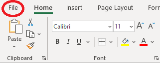
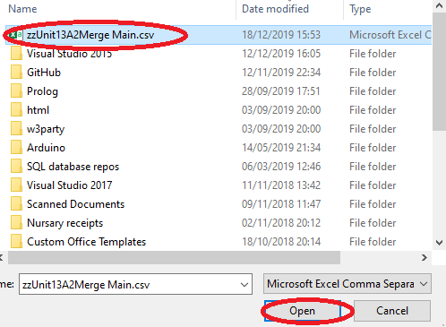

This guide follows through on how convert the Excel spreadsheet file into a CSV and how generate the feedback by using the application. Step 1-2 shows how to convert the Excel spreadsheet into a CSV. Step 3-6 shows how to generate feedback by using the application.
Step 1:
Write your feedback for each student in the Excel Spreadsheet feedback template. It does not matter if the assignments are different for each student. If you do not have a template, you can download it here:
Step 2:
Once all the feedback is ready for students, convert the Excel Spreadsheet feedback into a CSV format and save the file on your device. The process is shown below:
Click file
Click save as
Select where to save on the device, then click on file formats and select CSV as shown below. Once that is done, click Save.

The file is now saved in a CSV format and is ready to be used by the application.
Step 3:
Launch the portable student feedback application in any browser. The screen will present buttons that will be used. Click Choose file button to choose your CSV as shown below.
Now choose your CSV file that you have saved on your device.
Once the file has been located, click on the file and hit the Open button. The file is now selected.
Step 4:
Image below shows that the application now displays your CSV file name that you have selected. Click Download feedback button to generate the feedback files.
Step 5:
You will be presented with a window like shown below. Here select the folder of where you would like to save this file. Click save and then go to that folder on your device.
Step 6:
Now you need to extract the files from inside the downloaded file you have saved. There are two options:
One option is to select all files from inside and drag them to any location on your device.
Second option is to right click on the file and select Extract all. When the window opens as shown below, select the destination of where the files should go and click Extract.
Now you have the feedback files, which are all ready to be given to students. Please make sure that all files have correct information and if not, check the Excel spreadsheet feedback data. Please do not modify columns in the Spreadsheet as this will affect the feedback.
The files can be opened in any browser by students. To email these files, add them as an attachment to the email.
If the application does not work as intended, try updating your current browser.
This guide follows through on what effective feedback techniques you can integrate into your feedback to students.
Personal
Provide students with personal feedback relating to their work. Always address the student directly. Personal feedback should only be related to students work and development. Do not give same feedback to multiple students, feedback needs to be personal.
Provide personal feedback in criterion comments and general comments.
Descriptive
Descriptive feedback is very good for students. However avoid too much information. Apply this technique in negative comments, to provide the student more information.
Apply descriptive comments in criteria comments and in general comments.
Motivational
Motivating students is important as it encourages them to improve on their work and in their academic development to increase their confidence. To motivate students, provide positive comments in the work, things that they did good on and what they could improve. Rewards is another method of motivation. Reward the student, write a positive overall comment. Avoid comparing to other students. Provide detailed feedback for things that need to be improved.
Provide motivational comments in the general comments.
Encourage for action
To provide effective feedback, tutors need to persuade students to take action in order to improve to get better grades. Persuade students to identify their own milestones in their work and encourage students to have peer-reviews with other students before submission of work.
Encourage action in general comments.
Action points
Action points are an effective way to give the student the actions that they need to do. Write action points as a numerical list.
Write action points in general comments.
Strengths and weaknesses
Identifying strengths and weaknesses of a student in the feedback is another part of motivational feedback. Write what the student did good and what could be improved in their work, focusing more on improval.
Provide strengths and weaknesses in general comments.
Areas for improvement
Students might need to improve their work in order to achieve their target goals and grades. In relation to assignments, target criteria might need to be improved more. Provide detailed comments of what needs to be improved.
Improvement comments can be in criterion comments and/or in general comments.
Refer to the criteria
When you are aware that the student is struggling with their work or is unclear of the target criteria, refer to the criterion comments of the assignment. Explain the given target criteria to the student and give examples.
Refer to the assignment target criteria in the criterion comments (one criteria at a time)
Additional comments
With the use of an Excel Spreadsheet feedback template, you may think that you cannot write a lot of comments inside cells, in fact that is not true. You may put sentences inside cells and to make it visually comfortable, you can expand the cells. Expanding cells will not affect the generated student feedback.